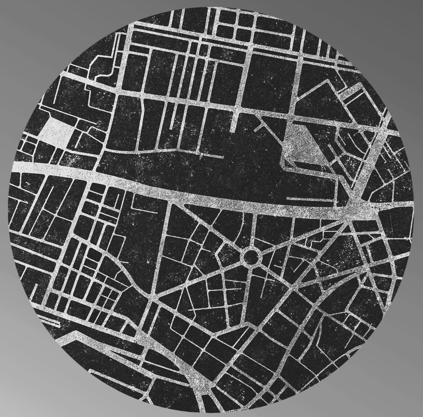

Potential offender · fictional

SOCL4091 · In-Class Exercises / Group Work
Routine Collision Lab
Use Boston street scenes, fictional daily routines, and counterfactual changes to explain how crime opportunities emerge at particular places and times.
How this works
Work as a group. Street View opens in a second tab; inspect the location, then return here to make a prediction. The goal is not to decide whether a place “looks dangerous.” Focus on convergence, routine movement, awareness space, targets, and guardianship.
- ObserveInspect a real Boston micro-place.
- Follow the clockSee how the routine population changes.
- Find the collisionLocate overlapping activity spaces.
- Change the routineTest a counterfactual.
- CompareMake a prediction before seeing robbery data.
- Ground-truthInvestigate data-derived robbery hot spots in Street View.
1
First impression
Observe the place before you know the routines
Open the street scene and explore in both directions. Do not search for crime statistics or neighborhood reputation.
Site A · Boston
Loading site…
What is present?
Select everything your group can directly observe. These are observations, not explanations.
Rate opportunity conditions, not the probability that a crime will definitely occur.
Very unfavorableVery favorable
Your group: 3 / 5
2
Routine activities
The place stays still. The population does not.
Move through the evening. The built environment is unchanged, but the mix of targets, guardians, and people familiar with the setting changes.
Selected time6:00 PM
Who is here now?
Very unfavorableVery favorable
Your group: 3 / 5
3
Crime pattern theory
Where do two routine paths collide?
Now follow one potential offender and one potential target. Neither person is moving randomly through the city.
Potential target · fictional
Choose the most likely convergence point
Where are the two people most likely to occupy the same node at approximately the same time?
4
Counterfactual
Change one routine, not the neighborhood
Each intervention changes how people use the place. Predict its effect on robbery opportunity under the scenario.
5
Prediction before outcome
Compare two places without using appearance as a shortcut
Inspect both street scenes. Use routine-activity and crime-pattern mechanisms to decide which site you expect to show more robbery concentration in the instructor dataset.
Which site do you predict will have the greater robbery concentration?
Core takeaway
A place can look exactly the same while its crime-opportunity structure changes substantially across the day. Crime Pattern Theory helps explain why particular nodes and paths enter an offender's awareness space; Routine Activities Theory helps explain when motivated offenders, suitable targets, and weak guardianship converge there.
6
Ground-truth the pattern
Investigate Boston robbery hotspots
The map identifies the strongest local concentrations in the Boston robbery point data. Click a numbered hotspot to open that exact location in Google Street View, then return here and record what you observe through a Routine Activities / Crime Pattern Theory lens.
How the hotspots are defined: for each robbery location, the activity counts robberies within a 200-meter radius, ranks those local density maxima, and keeps hotspot centers at least 500 meters apart. The numbered center is an actual robbery point. This is a descriptive spatial-density exercise, not a significance test.
Selected hotspot
Observe before explaining. Pan around the location in Street View. Record visible features first, then connect them to theory. Do not infer offender motivation or resident characteristics from appearance.
Discuss as a group
After inspecting several hotspots, identify two built-environment features that recur across locations and one important difference. Which observations are consistent with RAT, which with CPT, and which could plausibly fit both?